Prashanth Ranganathan
Founder and CEO, Zinc
- Former PayU Credit CEO
- Serial entrepreneur — Founder of Paysense and Truvie Security
- Stanford University graduate
For founders, builders, product leaders, and technology professionals whose wealth crossed borders

You built your wealth through ownership—RSUs, global equity and investments, not just income. Your wealth does not live in one place. Yet when life presents an opportunity, accessing your own wealth often means making difficult trade-offs: selling long-term investments, paying unnecessary taxes, or navigating fragmented financial systems.
There is a better way. One where smarter financial decisions let you keep building your future while making the most of today.
Access capital without selling the
assets you believe in
Make life’s biggest decisions without
interrupting years of compounding
Bring your global financial life together
and make decisions with confidence
That's the future we're building.
Founder and CEO, Zinc

Co-Founder and CTO, Zinc
Raised $25.5M (Seed round) — Backed by the best